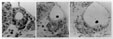
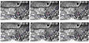

Name: statoacoustic ganglion
Abbreviation: sag, gVIII
Synonyms: VIIIth nerve ganglion, octaval ganglion
Figures:

neurogenesis sections

timelapse
Description: The sensory ganglion of the ear. Neuroblasts delaminate from the otic epithelium between 22h and 42h, and accumulate beneath the anteroventral floor of the otic vesicle to form the ganglion. The border of the otic epithelium is ill-defined in this region; cell motility is enhanced here, and cells can be observed leaving the epithelium using DIC optics and time-lapse photography. At prim 10 stage (28h) the ganglion is a loose aggregation of cells; by long pec stage (48h) the ganglion is more compact and has shifted medially, extending beneath both anterior and posterior sensory maculae of the ear. By four days of development, the ganglion sits between the ventromedial wall of the ear and the ventral part of the hindbrain. Neurons of the statoacoustic ganglion innervate hair cells of all five sensory patches of the ear; their central processes form the VIIIth (octaval) nerve.
Homologues:
Stages:
Parents (forms from): cranial placodal ectoderm (otic placode)
Children:
Group (member of):
Markers:
Publications:
Comments: None